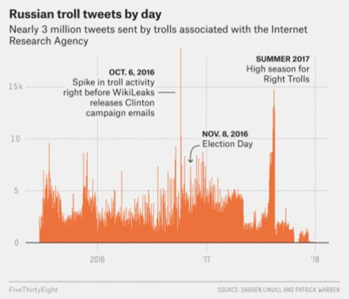

« Les Russes attaquent ! » : La Presse joue les porte-paroles du FBI, un service de renseignement peu digne de confiance
par Julie LÉVESQUE
PREMIÈRE PARTIE : LES PREUVES
À l’instar de Radio-Canada, alliée de la CIA1 dans la chasse aux fausses nouvelles, les journalistes de La Presse Vincent Larouche et Philippe Teisceira-Lessard se font les porte-paroles du FBI dans cet article au titre on ne peut plus alarmant : Des « trolls » russes ont attaqué le Canada2.
Péril rouge 2.0?
Ça donne presque le goût de sortir son abri nucléaire.
Malgré un titre dépourvu d’incertitude, les journalistes se basent exclusivement sur des allégations du FBI et les actes d’accusation sur la présumée ingérence russe dans les élections étasuniennes, lesquels n’ont fourni jusqu’à ce jour aucune preuve tangible de ce qu’ils avancent.
D’ailleurs, le procureur spécial Robert Mueller, ancien directeur du FBI, a demandé à un juge fédéral3 de « protéger la preuve volumineuse » qu’a réclamé l’avocat qui représente Concord Management, l’une des compagnies accusées dans son rapport et appartenant à Yevgeniy Prigozhin, un homme d’affaires proche de Vladimir Poutine. Concord Management a plaidé non coupable. Mueller a fait valoir que remettre des preuves à l’avocat « mettrait en péril des enquêtes en cours », puisque les services de renseignement russes poursuivent selon lui leurs « opérations d’interférence ».
Notons qu’à moins de vivre dans une république de bananes, un accusé a le droit de voir la preuve accumulée contre lui. Il faut admettre cependant que les avocats de la défense n’y sont pas allés avec le dos de la cuillère.
Ces derniers ont demandé des informations sur toutes les opérations d’ingérence électorale menées par les États-Unis depuis la Seconde Guerre mondiale. Selon le chercheur Dov H. Levin4, qui a étudié ces opérations de la Russie et des États-Unis entre 1946 et 2000, le leader autoproclamé du « monde libre » est responsable de 70 % des 117 cas d’ingérence relevés par le chercheur.
Ça fait beaucoup de documents à préparer pour le procureur.
Le cas le plus ironique d’ingérence est merveilleusement illustré par cette une du Times, où les États-Unis se vantent très ouvertement de s’être ingérés dans les élections russes en aidant Boris Eltsine à se faire élire en 1991 :
Les Yankees à la rescousse : L’histoire secrète des conseillers étasuniens qui ont aidé Eltsine à gagner.
Les avocats de Concord Management ont également demandé à voir5 « la liste complète des faux comptes de médias sociaux, les noms des présumés complices, les détails de la surveillance électronique des agences de renseignement étasuniennes, ainsi que l’identité des Étasuniens incités à aider la campagne russe ».
Autre fait intéressant dans cette histoire, l’avocat s’est plaint6 au juge que Concord Catering, une autre compagnie accusée dans le rapport Mueller, « n’existait même pas au moment des faits exposés dans l’acte d’accusation ».
Malgré le manque de preuves offertes au public et la volonté affichée de Mueller de garder « la preuve volumineuse » secrète, les journalistes de La Presse manifestent une absence totale de sens critique face aux allégations du FBI.
Pourtant, s’il existe une institution qui mérite la suspicion de tous, surtout celle des journalistes, c’est bien le FBI.
LES « PREUVES » D’INGÉRENCE RUSSE
D’abord, en ce qui concerne la présumée ingérence russe dans les élections étasuniennes, si les faux comptes Twitter et Facebook ont bel et bien existé, on ne nous a jamais démontré qui les contrôlait, ni que leur objectif était d’influencer les résultats électoraux, comme l’expliquait l’auteure de ces lignes dans Faux comptes Twitter russes et manipulation de l’opinion publique : une idée de l’armée américaine7.
Il suffit d’examiner les exemples de pubs et de gazouillis publiés par la minorité démocrate du House Select Committee on Intelligence8, la Commission qui supervise, entre autres, le FBI, pour avoir de sérieux doutes sur les conclusions du rapport Mueller.
Par exemple, voici selon eux une « preuve » de l’interférence russe (Exhibit A Ad 19). On peut voir un compte Facebook, LGBT United, faisant la promotion d’un livre à colorier Bernie Sanders dans un anglais très approximatif. La grammaire déficiente saute aux yeux et indique clairement que l’anglais n’est pas la langue maternelle de l’auteur, et donc, que l’opération était tout sauf sophistiquée. La publication a généré 3 partages et 40 réactions.
C’est l’auteure qui souligne.
Il est quand même incroyable que de toute la « preuve volumineuse » disponible, les démocrates aient choisi cet exemple de livre à colorier (affreux en passant), pour illustrer « les tentatives de la Russie de semer la discorde en ligne10 ».
Cet exemple complètement farfelu, comme bien d’autres dans le lot, est loin d’être convaincant et ne prouve absolument rien.
Comme pièce à conviction de « contenu visant à supprimer le vote d’électeurs découvert par Twitter et fourni à la Commission », la minorité démocrate a publié plusieurs photos de gazouillis contenant de la désinformation. Ils invitaient par exemple à voter pour Hillary Clinton en ligne ou par texto.
Le commentaire qui accompagne ces gazouillis que Twitter a retirés de sa plateforme est très révélateur : « Les comptes associés à cette activité n’étaient pas clairement d’origine russe, mais certains comptes semblent avoir été automatisés. » (C’est l’auteure qui souligne dans toutes les citations.)
Bref, Twitter n’a pas pu établir que ces comptes étaient d’origine russe et n’a aucune certitude qu’ils étaient automatisés.
Comme le démontrent ces deux exemples, on ne peut pas parler de preuves solides d’ingérence russe lorsque l’on prend la peine d’examiner les pièces à conviction offertes au public.
Les journalistes de La Presse présentent pourtant le point de vue des autorités étasuniennes sans remettre en question la véracité des allégations. En se basant sur une accusation révélée le 19 octobre dernier, ils soulignent un passage faisant surtout référence aux élections présidentielles de 2016. Le document déposé en cour prétend que « la conspiration a un but stratégique qui se poursuit à ce jour ». On peut lire dans La Presse :
« Le document allègue que les employés de l’IRA utilisent de faux profils sur Facebook, Twitter ou Instagram et se présentent comme des Américains afin de “semer la division et la discorde”, de créer “de la polarisation sociale et politique”, de “miner la confiance dans les institutions démocratiques” et de favoriser certains candidats aux élections. »
Difficile de comprendre comment on a pu en venir à la conclusion que le but de l’opération était d’influencer les élections de 2016 en favorisant certains candidats puisque les données de Twitter démontrent11 que l’activité des présumés trolls était à son plus fort à l’été 2017.
Par ailleurs, comme l’auteure le mentionnait dans Faux comptes Twitter russes et manipulation de l’opinion publique : une idée de l’armée américaine12, le témoignage de l’avocat général intérimaire de Twitter, Sean J. Edgett, au Comité du sénat sur les comptes Twitter reliés à « l’IRA du Kremlin » semble indiquer que cette accusation ne tient qu’à une croyance et ne s’appuie sur aucune preuve. M. Edgett a déclaré le 31 octobre 2017 :
« Les comptes que nous avons identifiés jusqu’à présent par le biais d’information obtenue par des tierces parties comme étant liés à l’Internet Research Agency ont été analysés séparément […] Nous croyons à ce stade-ci que tous ces [2752] comptes sont associés à l’IRA […] »
L’origine présumée et non prouvée de ces comptes et leurs liens hypothétiques avec l’IRA, analysés par une tierce partie anonyme, se reflètent également dans les comptes Facebook en cause, si l’on se fie à la déclaration du chef de la sécurité de Facebook13 du 6 septembre 2017 :
« En vérifiant les achats de publicité, nous avons trouvé approximativement 100 000 dollars de dépenses entre juin 2015 et mai 2017 […] liées à des comptes inauthentiques […] Notre analyse suggère que ces comptes et ces pages étaient affiliés et probablement gérés depuis la Russie […]
La grande majorité des annonces gérées par ces comptes ne faisaient pas spécifiquement référence aux élections présidentielles, au vote ou à un candidat en particulier […] »
Non seulement il n’y a aucune certitude que ces comptes étaient gérés de la Russie, mais en plus, la « grande majorité » de leur contenu n’avait rien à voir avec les élections.
Même Mark Zuckerberg dans son témoignage devant le Congrès le 21 août dernier déclarait que Facebook avait « retiré des pages, des groupes et des comptes pouvant être liés à des sources que le gouvernement étasunien avait auparavant identifiées comme étant les services de renseignement russes ».
Si les termes employés par les représentants de Facebook et Twitter font preuve d’incertitude quant à la provenance et l’intention des comptes en cause, les accusations des autorités étasuniennes en sont, au contraire, totalement dépourvues, comme l’article de La Presse, dans lequel les journalistes concluent hors de tout doute raisonnable :
« En réalité, selon des données rendues publiques par Twitter, tous ces tweets trompeurs, dont ceux de @SouthLoneStar, sont envoyés à partir de la Russie. Ils sont l’oeuvre d’employés de l’Internet Research Agency (IRA), une usine de “trolls” établie au 55, rue Savushkina, à Saint-Pétersbourg. »
En réalité, cet article de La Presse démontre à merveille comment des probabilités peuvent devenir « réalité » et faits établis dans les médias.
À la lumière de ce qui précède, l’absence totale de rigueur des journalistes crève l’écran.
L’un des comptes servant de « preuve » d’ingérence russe
On le voit bien, les médias traditionnels se gavent aveuglément du discours des autorités étasuniennes alléguant une conspiration directement liée au Kremlin alors que l’hypothèse la plus plausible est qu’il s’agissait d’une opération commerciale de pièges à clics exploitant des sujets chauds, sans plus, puisque les publications présentées comme preuves vont dans tous les sens : pour et contre Clinton et Trump, pour et contre Black Lives Matter, pour et contre les musulmans, etc.
Il y a peut-être vraiment eu complot du Kremlin, toutefois, jusqu’à présent, rien ne le prouve. Les journalistes, qui sont généralement si prompts à dénoncer des théories du complot, même lorsqu’ils croulent sous une montagne de preuves, incluant des preuves scientifiques, comme dans le cas du 11-Septembre, vouent un véritable culte à cette théorie de conspiration russe n’offrant aucune preuve tangible. Les « preuves » disponibles incitent plutôt à la prudence vis-à-vis de toute déclaration des autorités étasuniennes concernant la manipulation des médias sociaux par la Russie.
« DES TROLLS RUSSES ONT ATTAQUÉ LE CANADA »
En ce qui concerne le Canada, où sont les preuves à l’effet que le Kremlin « nous a attaqués » à coup de trolls ? Devrait-on croire sur parole des services de renseignement, surtout des services de renseignement d’un autre pays qui a tout intérêt à faire mal paraître un de ses principaux ennemis ?
Et de quelle enquête du FBI parle-t-on ? Ce n’est pas clair. Les journalistes ne nous donnent aucune information à ce sujet. Aucun titre. Aucun lien.
Niet.
Aucun moyen de vérifier, mais puisqu’ils parlent d’allégations tout au long de l’article, on peut conclure qu’il n’existe pas plus de preuve tangible dans « l’attaque » canadienne que dans celle des États-Unis et l’hypothèse la plus plausible est encore qu’il s’agissait d’une opération de pièges à clics.
Les gazouillis cités en exemple par La Presse ne semblent pas favoriser un programme politique plus qu’un autre et semblent plutôt voués à générer des clics plus que d’éventuels votes pour un candidat précis : « ces pyromanes du web », écrivent les journalistes, « ont attaqué les premiers ministres Stephen Harper et Justin Trudeau ».
Ils mettent surtout l’accent sur de faux gazouillis exploitant la tuerie de Québec. Les messages du « compte @SouthLoneStar, qui dit être un “fier Américain” établi au Texas, tent[ent] de maintenir en vie la thèse des tireurs syriens », pour ensuite accuser un « musulman marocain ».
En quoi le Kremlin profiterait-il de ce genre de message, incitant à l’hostilité des Étasuniens, plus que des Canadiens, envers les réfugiés syriens et les musulmans ? Une hostilité accrue envers les Syriens et les musulmans n’aurait-elle pas plutôt pour effet d’avantager et de promouvoir la « guerre au terrorisme » menée par les États-Unis, notamment en Syrie ?
Les journalistes ne se sont vraisemblablement pas posé ces questions.
Il existe deux possibilités concernant les allégations du FBI rapportées par La Presse : ou le FBI dit la vérité et a des preuves secrètes de ce qu’il avance ou il ment dans le but de provoquer et justifier une attitude hostile envers la Russie et réprimer la dissidence.
S’il ment pour ces raisons, ce ne serait pas la première fois.
LE PASSÉ PEU RELUISANT DU FBI : UNE ORGANISATION QUI N’INSPIRE PAS DU TOUT CONFIANCE
Rappelons à Messieurs Larouche et Teisceira-Lessard que le magazine Mother Jones a publié en 2011 une série d’articles sur le FBI 14, laquelle concluait qu’entre 2001 et 2011, tous les complots terroristes en sol étasunien ayant fait l’objet d’une importante couverture médiatique étaient des opérations d’agents provocateurs du FBI. Tous sauf trois. L’enquête a démontré que le FBI orchestrait des complots afin d’épingler de présumés terroristes et se vantait par la suite de les avoir déjoués.
Cette information à elle seule commande l’extrême prudence face à toute déclaration du FBI.
Il convient surtout de rappeler que de 1956 à 1971 (officiellement), le FBI a mené une opération de contre-espionnage, nom de code COINTELPRO pour Counterintelligence Program.
Selon l’Encyclopédie Britannica15, cette opération « visait à discréditer et neutraliser des organisations considérées comme subversives de la stabilité politique des États-Unis. L’opération était clandestine et employait souvent des moyens extralégaux [incluant des assassinats] afin de criminaliser diverses formes de luttes politiques et faire dérailler plusieurs mouvements sociaux, comme ceux en faveur des droits civiques et de l’indépendance de Puerto Rico. »
Les groupes antiguerres et de défense des droits des Noirs et des Autochtones, la presse d’avant-garde, le Parti communiste, le Socialist Worker Party et bien d’autres groupes de gauche figuraient parmi les cibles du Bureau.
Autrement dit, COINTELPRO visait à détruire la nouvelle gauche et, plus particulièrement, à empêcher l’ascension d’un leader noir charismatique pouvant mobiliser les Afro-américains et en faire une force politique menaçant l’ordre établi.
L’une des tactiques consistait à accuser des personnalités que les autorités considéraient comme une menace d’être communistes, un peu comme on accuse aujourd’hui des journalistes indépendants critiques de la politique étrangère des États-Unis et de l’OTAN de relayer la propagande du Kremlin. Une autre tactique visait à « semer la division et la discorde » dans les mouvements de protestation, exactement ce dont on accuse la Russie aujourd’hui.
L’association du mouvement Black Lives Matter à l’ingérence russe et la vague de répression des médias indépendants ayant suivi les accusations de Robert Mueller a des relents de COINTELPRO.
Dans la suite de cet article, nous examinerons plus en détail cette opération clandestine du FBl, ultra pertinente dans le contexte actuel, et les conséquences des accusations contre la Russie.
Partager cette page